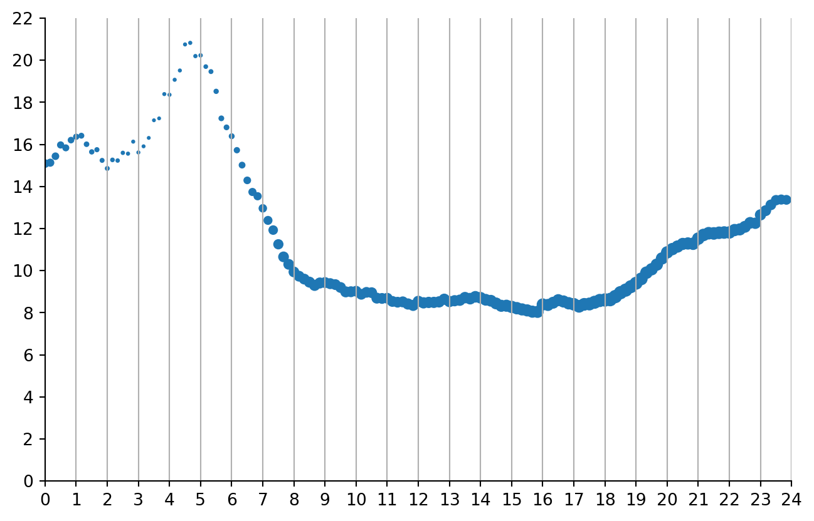

block-beta columns 3 space A(["Professors do \nnot know SQL"]) space B(["Professors do not\nteach SQL to\ngrad students"]) space D(["Grad students\nbecome professors"]) space C(["Grad students\ndo not know SQL"]) space A --> B B --> C C --> D D --> A
Teach SQL in (grad) school
analytics
Why SQL ought really to be a staple in the toolbox of anyone working with data - in or outside academia.
On December 12 I gave a workshop to a small crowd for the series Workshops for Ukraine, organized by Dariia Mykhailyshyna.
Besides being happy to a tiny little contribution to the Ukranian cause, it was a perfect opportunity to
- Write down some material I have long wanted to share.
- Disseminate to academics the value of using SQL when working with data
Which brings me to one of my greatest wishes towards higher education (in Denmark, at least).
Teach SQL in (grad) school
Pushing SQL into university classes is one of my pet peeves. I am honored to be among the “industry panel” (a forum where prospective employers can give input to the direction of a course of studies) for the bachelor in cognitive data science and the master in social data science at Copenhagen University. Pushing SQL in class teachings is one of the points I bring back to each and every meeting.
SQL has consistently been around for about 40 years, and nothing points to it being less relevant going forward. On the contrary, business analytics is increasingly dependent on it. Further, while once you had to set up a SQL database, and ideally a server, for taking advantage of database engines, recent advances in the availability of self-contained database engines like DuckDB make it accessible to anyone who can run an R or a python script. I have used SQL daily at both Danmark Nationalbank and Realkredit Danmark.
Yet none of the people I have ever hired directly after university knew it.
It’s a skill that has to be taught at work. It takes time, it takes errors, it prolongs the time gap between “just focus on learning” and “you can actually start helping me for real” for newly educated hires. At the same time, I have to make them unlearn all their pandas workflow, and smart pandas hacks they have taught themselves to solve issues that are really best solved by a good old SQL query.
So why is this blatant mismatch between data skills taught at unis and required outside of academia occurring?
My thesis is simple.
Most academic economists never really pick up SQL
And thereby, they fail to realize its usefulness.
And that’s true even for data people, very good at coding in R or python or Julia or whatever else. I know, because I was one of them.
It’s a recurring circle of missed opportunities. Econ professors do not know SQL, so they don’t teach it at school. The students going to the private sector will learn it, but those pursuing an academic career are never exposed to it, and never realize what it can. At best, they have heard about it and regard it as “some sort of old-school, weird way to extract data from remote databases”. So when it’s their turn to teach data classes, they do not teach it.
At the same time, compared to fields like law, or medicine, the “real world” of the private sectors is an absorbing state. People like me, going from academia to the private sector, do not ever go back, even just for teaching a class.
This post, maybe the first in a series, is meant to showcase why SQL ought really to be a staple in the toolbox of anyone working with data - in or outside academia. The focus of this post will be showcasing how SQL allows you to use your computing resources efficiently. And thereby, working with larger-than-RAM data.
But what about speed?
A great seeling point of tools like DuckDB is that they allow you to do the same stuff you’d do in pandas or dplyr way faster.
There’s a lot that has been written on this already however, and I’d refer to this post by Grant McDermott if you want to know more.
Furthermore, focus on efficiency is also a focus on speed. Using resource optimally is one of the main reasons database engines are fast at data processing.
But isn’t SQL just a weird way to download data from a remote database?
…And then do the real data work in python or R?
NO
This is often the first misconception to eliminate. You can of course use SQL this way, like an ill-devised FTP tool. You can also choose to cut a steak with a scissor. Neither is a good idea: you’d be using the wrong tool for the intended purpose.
The point of SQL is very much not of downloading all available data from a remote server. In fact, SQL is used for the opposite: Selecting only the data you need and minimize the flow between where the data resides, and where it needs to be loaded to (your RAM).
But the second, understandable misconception, is that using SQL:
- Requires setting up a database of sorts
- Is kind of pointless when working with local data
I'm still not sure I understand the benefits.
Is it that the WHERE commands are so intuitive in SQL? I could do a similar query very easily in dplyr.
Is it the size of the data? I could use feather in R or just work on the cluster. — Peter Deffebach (@macrodev.bsky.social) December 20, 2024 at 5:14 PM
Peter’s question is a fair one. Why should we bother?
Use your computing resources efficiently
In my opinion, the main point of SQL is that it is designed to use resources efficiently. Both when querying, and when storing data (hence relational databases).
The need for efficiency is often lost because of today’s superpowered hardware. During my PhD, I worked on a remote windows server with 5GB RAM available for data and shared across a dozen of so researchers. Today, a MacBook Pro ships with minimum 16GB RAM. Computers are extremely fast, and cloud computing is easily accessible.
And yet, I have always disliked wasting resources. Why waiting minutes when a data tasks can be done in seconds? What if you encounter a truly large dataset? Are you willing to wait hours just because you are including in your workflow tons of data you do not actually need?
In the sections below I will use NYC’s yellow taxi cab data for a few examples. In line with Peter’s question above, I simply downloaded the parquet with October 2024 data and saved it locally. Imagine this as a very simple local data source.
Code
from pathlib import Path
import urllib.request
savedfile = Path.cwd() / 'yellow_tripdata_2024-10.parquet'
if savedfile.is_file():
pass
else:
urllib.request.urlretrieve(
"https://d37ci6vzurychx.cloudfront.net/trip-data/yellow_tripdata_2024-10.parquet",
"yellow_tripdata_2024-10.parquet"
)As hinted several times already, I’ll be using duckdb to work with the data.
Code
import duckdb
Warning
I use basic SELECT statements throughout the examples below. I do not explain these statements in this post, but I include the code for each example.
I might write a blog post with an introduction to SELECT statements, but for now I refer to this notebook.
Load only the data you need
The whole point of using SQL is that you never need to load all of the available raw data in your system. That’s the whole point of data pipelines and data cleaning.
There’ll be columns you do not need, rows you need to exclude. You might think “but it takes no time anyway”. Sure, with our overpowered machines. But every time we do unnecessary operations we throw sand in the cogs of our machine.
Doing so can be rational: After all, I do not code in C++. My time is also money. But loading tons of unnecessary data into our RAM, for discarding them right afterwards is a clear and easily avoidable waste of resources.
But I need to explore the data!
Indeed.
Data exploration DOES NOT require loading the whole thing into the RAM. I definitely do not need to look at every single row and every single column to understand how I can use a dataset.
Mostly, you want to extract specific examples, doing some aggregates. All things SQL excels at.
So let’s see what the first five rows of the data we downloaded contains.
Code
duckdb.sql(
"""
select *
from 'yellow_tripdata_2024-10.parquet'
limit 5
"""
)┌──────────┬──────────────────────┬───────────────────────┬─────────────────┬───────────────┬────────────┬────────────────────┬──────────────┬──────────────┬──────────────┬─────────────┬────────┬─────────┬────────────┬──────────────┬───────────────────────┬──────────────┬──────────────────────┬─────────────┐
│ VendorID │ tpep_pickup_datetime │ tpep_dropoff_datetime │ passenger_count │ trip_distance │ RatecodeID │ store_and_fwd_flag │ PULocationID │ DOLocationID │ payment_type │ fare_amount │ extra │ mta_tax │ tip_amount │ tolls_amount │ improvement_surcharge │ total_amount │ congestion_surcharge │ Airport_fee │
│ int32 │ timestamp │ timestamp │ int64 │ double │ int64 │ varchar │ int32 │ int32 │ int64 │ double │ double │ double │ double │ double │ double │ double │ double │ double │
├──────────┼──────────────────────┼───────────────────────┼─────────────────┼───────────────┼────────────┼────────────────────┼──────────────┼──────────────┼──────────────┼─────────────┼────────┼─────────┼────────────┼──────────────┼───────────────────────┼──────────────┼──────────────────────┼─────────────┤
│ 2 │ 2024-10-01 00:30:44 │ 2024-10-01 00:48:26 │ 1 │ 3.0 │ 1 │ N │ 162 │ 246 │ 1 │ 18.4 │ 1.0 │ 0.5 │ 1.5 │ 0.0 │ 1.0 │ 24.9 │ 2.5 │ 0.0 │
│ 1 │ 2024-10-01 00:12:20 │ 2024-10-01 00:25:25 │ 1 │ 2.2 │ 1 │ N │ 48 │ 236 │ 1 │ 14.2 │ 3.5 │ 0.5 │ 3.8 │ 0.0 │ 1.0 │ 23.0 │ 2.5 │ 0.0 │
│ 1 │ 2024-10-01 00:04:46 │ 2024-10-01 00:13:52 │ 1 │ 2.7 │ 1 │ N │ 142 │ 24 │ 1 │ 13.5 │ 3.5 │ 0.5 │ 3.7 │ 0.0 │ 1.0 │ 22.2 │ 2.5 │ 0.0 │
│ 1 │ 2024-10-01 00:12:10 │ 2024-10-01 00:23:01 │ 1 │ 3.1 │ 1 │ N │ 233 │ 75 │ 1 │ 14.2 │ 3.5 │ 0.5 │ 2.0 │ 0.0 │ 1.0 │ 21.2 │ 2.5 │ 0.0 │
│ 1 │ 2024-10-01 00:30:22 │ 2024-10-01 00:30:39 │ 1 │ 0.0 │ 1 │ N │ 262 │ 262 │ 3 │ 3.0 │ 3.5 │ 0.5 │ 0.0 │ 0.0 │ 1.0 │ 8.0 │ 2.5 │ 0.0 │
└──────────┴──────────────────────┴───────────────────────┴─────────────────┴───────────────┴────────────┴────────────────────┴──────────────┴──────────────┴──────────────┴─────────────┴────────┴─────────┴────────────┴──────────────┴───────────────────────┴──────────────┴──────────────────────┴─────────────┘Cool. Just gotten the first 5 rows out. One could already see some patterns and some data of use.
But I wonder, can I describe all variables similarly to a pandas.DataFrame.describe()? With DuckDB, sure
Code
duckdb.sql(
"""
SUMMARIZE SELECT * from 'yellow_tripdata_2024-10.parquet'
"""
).df()| column_name | column_type | min | max | approx_unique | avg | std | q25 | q50 | q75 | count | null_percentage | |
|---|---|---|---|---|---|---|---|---|---|---|---|---|
| 0 | VendorID | INTEGER | 1 | 6 | 3 | 1.767158236629157 | 0.4231049313968447 | 2 | 2 | 2 | 3833771 | 0.00 |
| 1 | tpep_pickup_datetime | TIMESTAMP | 2009-01-01 00:35:59 | 2024-11-14 18:30:00 | 1646536 | None | None | 2024-10-09 14:26:10.066878 | 2024-10-17 02:39:44.162982 | 2024-10-24 17:46:05.259919 | 3833771 | 0.00 |
| 2 | tpep_dropoff_datetime | TIMESTAMP | 2009-01-01 01:29:28 | 2024-11-14 18:41:41 | 1673214 | None | None | 2024-10-09 15:00:32.457971 | 2024-10-17 04:35:02.69613 | 2024-10-24 18:05:48.686127 | 3833771 | 0.00 |
| 3 | passenger_count | BIGINT | 0 | 9 | 11 | 1.308449781329327 | 0.76773460811274 | 1 | 1 | 1 | 3833771 | 10.27 |
| 4 | trip_distance | DOUBLE | 0.0 | 366343.04 | 3580 | 5.123568288246284 | 486.9214199492435 | 1.0236470768272852 | 1.7703947295351523 | 3.408899640526454 | 3833771 | 0.00 |
| 5 | RatecodeID | BIGINT | 1 | 99 | 7 | 2.3393857801850997 | 10.972502420745363 | 1 | 1 | 1 | 3833771 | 10.27 |
| 6 | store_and_fwd_flag | VARCHAR | N | Y | 2 | None | None | None | None | None | 3833771 | 10.27 |
| 7 | PULocationID | INTEGER | 1 | 265 | 290 | 164.48797776393008 | 64.3353498901592 | 132 | 161 | 233 | 3833771 | 0.00 |
| 8 | DOLocationID | INTEGER | 1 | 265 | 272 | 163.9748793029109 | 69.61100435412126 | 114 | 162 | 234 | 3833771 | 0.00 |
| 9 | payment_type | BIGINT | 0 | 4 | 5 | 1.0994349949436208 | 0.6603012949509145 | 1 | 1 | 1 | 3833771 | 0.00 |
| 10 | fare_amount | DOUBLE | -920.0 | 1680.2 | 8804 | 19.720713955008453 | 19.431893985781933 | 9.30049177536528 | 14.224609681307248 | 23.136480969465936 | 3833771 | 0.00 |
| 11 | extra | DOUBLE | -7.5 | 16.0 | 68 | 1.400851519300449 | 1.8259134524837513 | 0.0 | 1.0 | 2.5 | 3833771 | 0.00 |
| 12 | mta_tax | DOUBLE | -0.5 | 10.5 | 11 | 0.4781669536339025 | 0.1347045242309791 | 0.5 | 0.5 | 0.5 | 3833771 | 0.00 |
| 13 | tip_amount | DOUBLE | -67.45 | 500.0 | 3783 | 3.4248225154810834 | 4.1867407431190955 | 0.0 | 2.6928540734898987 | 4.41006614684763 | 3833771 | 0.00 |
| 14 | tolls_amount | DOUBLE | -76.38 | 150.0 | 1216 | 0.584599502682299 | 2.2606473061080656 | 0.0 | 0.0 | 0.0 | 3833771 | 0.00 |
| 15 | improvement_surcharge | DOUBLE | -1.0 | 2.0 | 5 | 0.9575214064689841 | 0.26930320533013286 | 1.0 | 1.0 | 1.0 | 3833771 | 0.00 |
| 16 | total_amount | DOUBLE | -901.0 | 1690.89 | 17716 | 28.429628798927773 | 24.41309204976698 | 16.09112832601518 | 21.539362915884368 | 31.333575348855142 | 3833771 | 0.00 |
| 17 | congestion_surcharge | DOUBLE | -2.5 | 2.5 | 6 | 2.230652282233429 | 0.8855332647216068 | 2.5 | 2.5 | 2.5 | 3833771 | 10.27 |
| 18 | Airport_fee | DOUBLE | -1.75 | 1.75 | 4 | 0.150372716923517 | 0.5092291673630285 | 0.0 | 0.0 | 0.0 | 3833771 | 10.27 |
Even though I won’t be doing speed comparisons, I must point out that this description is pretty much instantaneous. A similar operation in pandas would likely be very fast, but so far I have avoided loading the full dataset in memory! And while that overhead might not make such a difference with 3.8M rows,
- I am using a minimal amount of RAM
- It will make a difference for datasets 10, 100, or 1000 times larger
I know I have 3.8M trips. I also know there are clear outliers. The trip_distance variable has a max of 366343.04 (miles?), and a P75 of 3.4, and a mean of over 5.
Let’s say that I want to do an analysis of taxi speed over time of day. I might want to exclude: * Weekends * Trips over 20 miles * Trips with 0 distance * Duration over a minute
Overall, why should I load into my memory rows I already now know I do not have to use? So While it’s true that a row selection is pretty straightforward to implement not only in SQL, but also in pandas, excel, whataver, the key is that by passing the filter before we load the data into the RAM, we’re saving a lot of space, energy, time.
But also, why limiting outselves to rows? If I need only times and distance, why not only load those columns? And maybe computing MpH on the fly?
Code
df = duckdb.sql(
"""
SELECT
tpep_pickup_datetime
, date_sub('second', tpep_pickup_datetime, tpep_dropoff_datetime) as duration_seconds
, trip_distance
, 3600*trip_distance/(date_sub('second', tpep_pickup_datetime, tpep_dropoff_datetime)) as mph
from 'yellow_tripdata_2024-10.parquet'
WHERE
trip_distance <= 20 and trip_distance>0
and dayofweek(tpep_pickup_datetime) between 1 and 5
and date_sub('second', tpep_pickup_datetime, tpep_dropoff_datetime)>60
"""
).df()
print(f"""Loaded {df.shape[0]} out of {
duckdb.sql("select count(*) from 'yellow_tripdata_2024-10.parquet'").fetchone()[0]
} rows. First five rows:"""
)
df.head()Loaded 2739362 out of 3833771 rows. First five rows:| tpep_pickup_datetime | duration_seconds | trip_distance | mph | |
|---|---|---|---|---|
| 0 | 2024-10-01 00:30:44 | 1062 | 3.00 | 10.169492 |
| 1 | 2024-10-01 00:12:20 | 785 | 2.20 | 10.089172 |
| 2 | 2024-10-01 00:04:46 | 546 | 2.70 | 17.802198 |
| 3 | 2024-10-01 00:12:10 | 651 | 3.10 | 17.142857 |
| 4 | 2024-10-01 00:31:20 | 280 | 0.97 | 12.471429 |
But we can take it a step further.
Do I need the microdata at all? At the end of the day, if I just want to plot a graph showing average taxi speed over time of day, why don’t I aggregate already -without loading every single row in an (expensive) pandas.DataFrame()? We can just import the aggregate data directly. No need to waste memory!
Code
# group by {frequency} minutes
frequency = 10
df = duckdb.sql(
f"""
with trips as (
SELECT
tpep_pickup_datetime
, date_sub('second', tpep_pickup_datetime, tpep_dropoff_datetime) as duration_seconds
, trip_distance
, 3600*trip_distance/(date_sub('second', tpep_pickup_datetime, tpep_dropoff_datetime)) as mph
from 'yellow_tripdata_2024-10.parquet'
WHERE
trip_distance <= 20 and trip_distance>0
and dayofweek(tpep_pickup_datetime) between 1 and 5
and date_sub('second', tpep_pickup_datetime, tpep_dropoff_datetime)>60
)
select
{frequency}*((60*hour(tpep_pickup_datetime) + minute(tpep_pickup_datetime))//{frequency})/60 as timeday_c
, AVG(mph) as avg_speed
, count(*) as cnt
from trips
where tpep_pickup_datetime is not null
group by all
"""
).df()
print(f"""Loaded {df.shape[0]} rows. First five rows:""")
df.head()Loaded 144 rows. First five rows:| timeday_c | avg_speed | cnt | |
|---|---|---|---|
| 0 | 14.000000 | 8.709100 | 24804 |
| 1 | 14.333333 | 8.567473 | 25610 |
| 2 | 16.833333 | 8.447701 | 28748 |
| 3 | 18.333333 | 8.766163 | 34094 |
| 4 | 20.500000 | 11.267965 | 27714 |
And plot the resulting rows. Ta-dah. Don’t need to see the microdata really for this kind of descriptive stats.
Code
import matplotlib.pyplot as plt
fig, ax = plt.subplots(1, 1, figsize=(8, 5))
ax.scatter(df["timeday_c"], df["avg_speed"], s=50*df["cnt"]/df["cnt"].max())
ax.spines[['right', 'top']].set_visible(False)
ax.set_xticks(range(0, 25, 1))
ax.set_yticks(range(0, 25, 2 ))
ax.grid(axis='x')
ax.set_ylim(0, 22)
ax.set_xlim(0, 24)
plt.show()

If you read this far…
…you would probably like to plot the same graph for weekends. Try to import it as well as a groupby aggregate 😉. It’s an extra 3 lines in the same query!
Join, join, join
Now, the real deal: SQL allows you to do operations that would be very hard - or downright impossible, as they’d overflow your RAM - without. Very often, these operations are about joining different tables together and filtering.
SQL was after all meant to query relational databases. The idea behind relational databases is efficiency. In my experience, their structure appears strange at the eyes of economists. We have been trained to think of orderly panel datasets, NxT, large matrixes ready for regressions. In reality, most data look like the example below.

The data is not stored “ready for analytics”. If you want to, say, regress moneySpent on price, maie controlling for employeeID, you need to join and patch 4 tables together. “SQL” (OLAP engines) is precisely constructed to make those joins on the fly as intuitive, quick, and painless as possible.
Of course, the example alone is a simplistic example. Tipically, data warehouses have hundreds of connected tables, all storing different pieces of information. ANd that’s relevant for you: Because this is the environment your students will meet if they get a job as an analyst in the private sector.
JOINs in SQL are therefore necessarily more powerful than .merge() operations in pandas. Think of JOINs as constructing behind the curtains all possible combinations across the tables you need to join, and applying filters to select the correct rows. So the ON conditions in JOINs are pretty much equivalent to WHERE statements.
The consequence is that with SQL you can easily do unequal joins (t1.var1>t2.var2), joins on functions of variables, and so on. These types of JOINs are way more common than one might think.
Take as an example the table linking clients to primary bank adviser I worked with last week. Its structure is something like the following
| ClientID | AdviserID | ValidFrom | ValidTo |
|---|---|---|---|
| A | 1 | 2021-01-14 | 2021-08-03 |
| A | 2 | 2021-08-03 | 2024-06-01 |
| A | 3 | 2024-06-01 | 9999-12-31 |
| B | 2 | 2023-12-01 | 9999-12-31 |
To find out which adviser the client had when they redeemed the mortgage, I would need to do a JOIN based on timestamps.
select
r.clientID
, r.redemption_date
, r.other_stuff
, a.AdviserId
from redemptions as r
left join advisers as a
on a.ClientId=r.ClientID
and r.redemption_time >= r.ValidFrom
and r.redemption_time < r.ValidToIf I had the same tables to join in pandas I would have to proceed in two steps: 1) Join the tables on ClientID 2) Subset the result on the temporal conditions
However, the first join might make the number of rows to explode - going past that step might not even be possible given memory limits.
But does that matter for the work of an academic economist?
It might. For example, think of matching on observables (or identifying a control group.) In our taxi data, let’s say I want to measure the effect of number of passengers on tip rate. And my identification strategy tells me that as long as pick-up, delivery locations, day of the week, time of the day, and airport fee are the same, and distance is within a mile, the number of passenger is randomly assigned. To ensure treatments and controls are not replicated, we can even pick potential treatments as those starting a trip on odd minutes, potential controls as those starting a trip on even minutes.
Bear with me, it’s the first example I could think of. I assume you’ll have a better identification strategy.
How would you find a matched control? Well, a single SQL query can do the job.
Code
%%time
df = duckdb.sql(
"""
with valid_rides as (
SELECT *
from 'yellow_tripdata_2024-10.parquet'
WHERE
trip_distance <= 20 and trip_distance>0
and dayofweek(tpep_pickup_datetime) between 1 and 5
and date_sub('second', tpep_pickup_datetime, tpep_dropoff_datetime)>60
and passenger_count>0
)
select
T.tpep_pickup_datetime as pickup_treat
, C.tpep_pickup_datetime as pickup_control
, T.tpep_dropoff_datetime as dropoff_treat
, C.tpep_dropoff_datetime as dropoff_control
, T.passenger_count as passenger_count_treat
, C.passenger_count as passenger_count_control
, T.tip_amount/T.total_amount as tip_share_treat
, C.tip_amount/C.total_amount as tip_share_control
from valid_rides as T
inner join valid_rides as C
ON
-- locations must be the same
T.PULocationID=C.PULocationID and T.DOLocationID=C.PULocationID
-- Airport fee the same
and T.Airport_fee=C.Airport_fee
-- Same day, same hour
and date_trunc('hour', T.tpep_pickup_datetime)=date_trunc('hour', C.tpep_pickup_datetime)
-- close enough distance
and T.trip_distance between C.trip_distance -0.5 and C.trip_distance +0.5
-- same payment type
and T.payment_type=C.payment_type
-- treated must start at odd minutes
and minute(T.tpep_pickup_datetime)%2=1
-- controls must start at even minutes
and minute(C.tpep_pickup_datetime)%2=0
-- and finally remove the same trip
and T.tpep_pickup_datetime != C.tpep_pickup_datetime
and T.tpep_dropoff_datetime != C.tpep_dropoff_datetime
--order by T.tpep_dropoff_datetime
"""
).df()
print(f"""Loaded {df.shape[0]} rows. First five rows:""")
df.head()Loaded 1241469 rows. First five rows:
CPU times: user 2.03 s, sys: 181 ms, total: 2.21 s
Wall time: 623 ms| pickup_treat | pickup_control | dropoff_treat | dropoff_control | passenger_count_treat | passenger_count_control | tip_share_treat | tip_share_control | |
|---|---|---|---|---|---|---|---|---|
| 0 | 2024-10-29 15:07:38 | 2024-10-29 15:48:27 | 2024-10-29 15:16:00 | 2024-10-29 15:59:01 | 1 | 1 | 0.167832 | 0.000000 |
| 1 | 2024-10-29 15:35:37 | 2024-10-29 15:02:41 | 2024-10-29 15:45:24 | 2024-10-29 15:07:57 | 1 | 1 | 0.166667 | 0.199695 |
| 2 | 2024-10-29 15:21:26 | 2024-10-29 15:18:28 | 2024-10-29 15:32:50 | 2024-10-29 15:27:39 | 1 | 2 | 0.000000 | 0.000000 |
| 3 | 2024-10-29 15:23:56 | 2024-10-29 15:06:54 | 2024-10-29 15:29:49 | 2024-10-29 15:11:40 | 1 | 1 | 0.000000 | 0.000000 |
| 4 | 2024-10-29 15:37:35 | 2024-10-29 15:18:28 | 2024-10-29 15:41:04 | 2024-10-29 15:27:39 | 1 | 2 | 0.000000 | 0.000000 |
Granted, it’s a relatively complex query - but does the job nicely. And here I couldn’t help it but printing out the time it took as well.
So, drum rolls… is there any effect?
Of course not, it was a stupid idea.
Code
duckdb.sql(
"""
select least(passenger_count_treat, 5) as passenger_count_treat
, least(passenger_count_control, 5) as passenger_count_control
, avg(tip_share_treat - tip_share_control) as effect
from df
group by all
"""
).df().pivot(columns='passenger_count_control', index='passenger_count_treat')| effect | |||||
|---|---|---|---|---|---|
| passenger_count_control | 1 | 2 | 3 | 4 | 5 |
| passenger_count_treat | |||||
| 1 | 0.001226 | 0.001432 | 0.003868 | 0.003036 | 0.000215 |
| 2 | -0.000163 | -0.000303 | 0.001733 | 0.004597 | 0.002828 |
| 3 | -0.000645 | 0.001073 | 0.004201 | 0.004506 | -0.002845 |
| 4 | -0.003199 | -0.005196 | -0.007590 | -0.007027 | -0.013053 |
| 5 | 0.002610 | -0.000297 | 0.004864 | -0.001569 | -0.000914 |
But, as always…

Summing up
- SQL is useful.
- It allows you to spare your machine for unnecessary data loads into expensive formats, such as
pandas.DataFrames. - It allows you do to cool joins that you did not dream of doing
- It allows you to spare your machine for unnecessary data loads into expensive formats, such as
- Thanks to DuckDB, you can easily run SQL queries on your local data.
- It has both a python and R interface
- Your students will need SQL in the private job market 🙏
If you work with students, do yourself, your students, and the whole industry a favor. Learn SQL and introduce it in college/university classes.
Thanks!